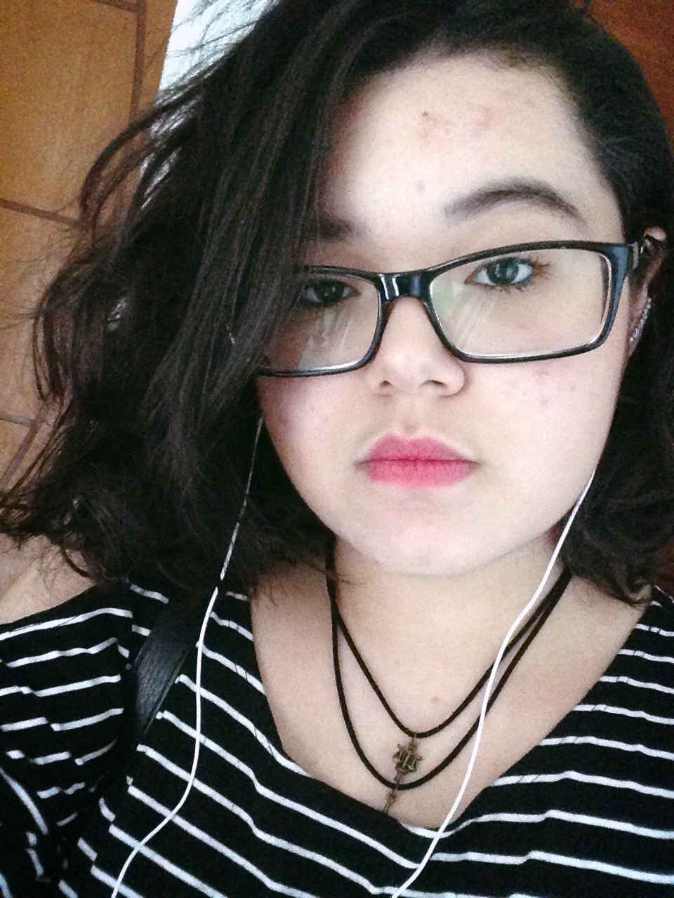

Curriculum Vitae 
Juliane Rodrigues de Souza
Endereço, e-mail e contatos
Rua Dom Jackson Damasceno 930, Flores - Manaus, AM - Brasil
Nascimento : 17 de abril de 2001
Telefone: +55 (92) 984698851
Email: souzajuh82@gmail.com
Qualificações Acadêmicas
Ensino Fundamental
SESI
Manaus, Am
2008-2012
IDAAM
Manaus-Am
2013-2016
Ensino Medio
Fundação Matias Machline
Manaus, Am
2017-2019
Histórico de Experiência Acadêmica
Representante de Classe
Idaam
Jan/2013 - Nov/2013
Histórico de Experiência Profissional
*nenhum
Idiomas (spoken/written/reading)
English: Intermediário/Intermediário/Intermediário - Cultura Inglesa Portuguese : Nativo
Cursos Relevantes
Técnologia em Informática - Fundação Matias Machline
Membership
*nenhum
Outras áreas de interesse
Literatura
Cultura Pop
Poesia
Jogos Eletrônicos
Maior ato de coragem realizado em vida
*Pensei muito nesse, mas não cheguei a nenhuma conclusão.
:(
Maior medo em vida
Não conseguir realizar meus sonhos.
Por que tem esse medo?
Uma vez eu li um depoimento de uma senhora idosa que tinha se arrependido de muitas coisas que não fez ao longo da vida. As pessoas costumam ter medo de tentar coisas grandes
ou "inalcansáveis" porque acham impossível ou difícil demais. Eu prefiro tentar. Nosso tempo é limitado, eu prefiro
gastá-lo com algo que eu me importe de verdade. Meus planos incluem muitas coisas, como trabalho voluntário, estudar no exterior, escrever um livro,
conhecer pessoas que eu admiro...adotar cachorros e conhecer o mundo. Esse último é o mais importante de todos. E, só de pensar em estagnar em um só lugar e viver a vida comum que todo mundo que eu conheço vive, já fico até um
pouco triste. Sobrevivência é fundamental, mas não quero vender meus dias de vida em forma de trabalho, em troca de dinheiro. De alguma forma, eu sei que tudo vai dar certo. Pelo menos alguns deles eu
preciso realizar.
Descreva o dia que teve mais sorte na vida
Era dia de prova, e eu simplesmente tinha esquecido completamente que ia ter naquele dia. Fiquei bem nervosa e uns dez minutos antes da prova começar, eu comecei a revisar o assunto loucamente na esperança de absorver alguma coisa
e não zerar completamente. Acabou que prova foi adiada, eu estudei por uma semana e consegui uma boa nota. Era prova de Literatura, aliás.
Gosta de animal de estimação? Descreva-os, referencie suas raças em sites da web
Adoro cachorros. Ainda não tenho uma opinião muio bem formada a respeito de felinos, é muito relativo. Eu tenho um poodle muito fofo que se chama Luke. É o amor da minha vida,
aquele cachorro é um dos meus melhores amigos e eu amo muito ele. Quero ter outros cachorros quando tiver minha própria casa e meu próprio dinheiro. A maioria, quero adotar
, mas existem algumas raças que eu sempre sonhei em ter:
Husky Siberiano
Qual seu time de coração? Quando começou a torcer para tal?
Referencie o nome do seu time com o site oficial dele.
Não torço para nenhum time com veêmencia, mas simpatizo com o Botafogo.
Você tem heróis? Quem seriam? Por que gosta tanto deles?
Tenho alguns: Meus pais, obviamente, são meus maiores exemplos.
Michael Jackson. Foi uma lenda do pop. Artista completo.
Steve Jobs. Gênio. Têm minha admiração, não só pelo império que construiu nem só pelo imenso legado que deixou no mundo da tecnologia,
mas por pensar fora da caixa, ele pensava diferente. "Think different"
Stan Lee. Criou os heróis mais queridos de todos os tempos, e era incrívelmente criativo. Que descanse em paz, excelsior!
Rick Riordan foi quem me abrias portas para a leitura quando criança. Foi por conta de Percy Jackson que eu adquiri o hábito de ler.
Hábito esse que já me ajudou a formar pensamento sobre muitos assuntos. Ler, para mim, é essencial. Abre horizontes e te mostra diferentes pontos
de vista. É incrível o que se pode fazer através das palavras. Sou fão do Rick.
Informe algumas musicas favoritas suas
- Without Me, Halsey
- Lost Boy, Troye Sivan
- Sink In, Amy Shark
Informe alguns videos do youtube favoritos seus
Você tem sonhos? Pode enumerar alguns?
Estudar no exterior
Conhecer pessoas de diferentes países
Trabalhar com o que eu gosto e ser feliz na vida profissional
Dar a volta ao mundo em um ano
Em relação a FMM, por que escolheu o curso de informática?
Foi o que eu mais me identifiquei. E sou feliz nele.